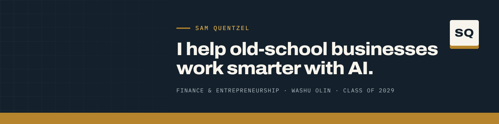

Brand Style Guide
Brand Style Guide
The rules behind this site, my resume header and my LinkedIn cover. The idea comes from my family's plumbing supply counter, where the good fittings are brass and nobody has time for a long explanation.
01 · Voice
Brand adjectives
- ResourcefulI use what is already in front of me, like decades of sales data sitting in an ERP system.
- DirectPlain words, short sentences, the result first.
- Hands-onI would rather build the thing and show it than describe it.
- CuriousFrom AI models to philosophy, I want to know why something works.
- DisciplinedJiu-jitsu and weight training taught me to show up when it's hard.
02 · Color
Colors
Four colors. Ink does the talking, Brass marks what matters, Steel supports and Paper keeps the page warm.
#14202BHeadlines, body text, buttons and the footer.#B5842CThe accent: rules, the monogram bar and active states. Deep Brass #7F560E for links and labels.#51626FSecondary text, captions and dates.#F7F4EDPage background. White is reserved for cards.03 · Type
Fonts
Bold and slightly wide, like the lettering on a supply house sign. Used for headlines, buttons and navigation.
Aa Bb Cc Dd Ee Ff Gg 0123456789
A readable serif for essays and stories. It slows the page down where I want people to read.
Aa Bb Cc Dd Ee Ff Gg 0123456789
For labels, dates and counts. A nod to part numbers in a catalog and to the code behind my projects.
Aa Bb Cc Dd Ee Ff Gg 0123456789
04 · Marks
Monogram and icons
The monogram is a nameplate: my initials in Ink with a Brass bar. The icons are single-weight line drawings, one for each part of my work.
05 · In use
LinkedIn cover
The same colors, type and monogram, sized for a LinkedIn cover photo at 1584 by 396 pixels. The left side is left open for the profile photo.
